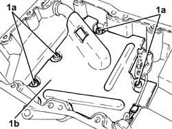
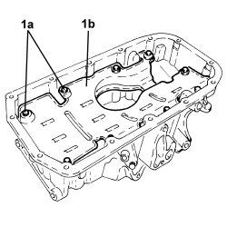
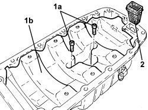

1020A46 CRANKCASE OIL SUMP PARTITION - R.R. WITH CRANKCASE SUMP REMOVED
- Path
- Procedures > 10 ENGINE > 1020 CRANKCASE SUMP AND COVERS > 1020A CRANKCASE OIL SUMP > 1020A46 CRANKCASE OIL SUMP PARTITION - R.R. WITH CRANKCASE SUMP REMOVED
- Kind
- repair procedure (removal / refitting; the operation number is the code)
- Applies to
- all engines; all production periods
- Interactive page
- https://sloeber94.github.io/elrnDB-fCrm/en/#/194000253
Applies to: engines: 2.2; all production periods
 Removing
Removing
 Refitting
Refitting1. Undo the bolts (1a) and remove the crankcase oil sump partition (1b).

Applies to: engines: 2.2; all production periods
Refitting
Removing- Place the crankcase oil sump partition back in its housing and secure it using the bolts.
Applies to: engines: 1.9 JTD 16v; all production periods
Removing
Refitting1. Undo the bolts (1a) and remove the crankcase oil sump partition (1b).

Applies to: engines: 1.9 JTD 16v; all production periods
Refitting
RemovingPlace the crankcase oil sump partition back in its housing and secure it using the bolts.
Applies to: engines: 2.4 JTD 20v; all production periods
Removing
Refitting1. Remove the sump oil return pipe connector.
2. Remove the sump condensation oil return inner connector complete with O-Ring.
3. Undo the fixing bolts (3a) and remove the sump bulkhead (3b) fastened to the oil sump.

Applies to: engines: 2.4 JTD 20v; all production periods
Refitting
RemovingFit the bulkhead and tighten the bolts fixing it to the engine oil sump.
Value daNm | Fastening | Component | Ø | |
|---|---|---|---|---|
. | 0.8 ÷ 1.0 | Bolt | CRANKCASE OIL SUMP PARTITION | M6 |
Fit the sump condensation oil return inner connector replacing the O-Ring.
Fit the sump oil return pipe connector.
Applies to: engines: 1.9 JTD 8v; all production periods
Removing
Refitting1. Undo the bolts (1a) and remove the crankcase oil sump partition (1b).
Applies to: engines: 1.9 JTD 8v; all production periods
Refitting
RemovingPlace the crankcase oil sump partition back in its housing and secure it using the bolts.
Applies to: engines: 1.8; all production periods
Removing
Refitting1. Undo the bolts (1a) and remove the partition (1b).
2. Remove the gauze filter.

Applies to: engines: 1.8; all production periods
Refitting
Removing- Place the partition complete with gauze filter back in its housing and secure it using the bolts.
Topics that link to this page (3)
- 1004E20 ENGINE - DISMANTLE AND REASSEMBLE FOLLOWING OPERATION 1004E10 - WASH AND CHECK DISMANTLED PARTS - REFIT CYLINDER HEAD AND OIL SUMP - DOES NOT INCLUDE REPAIRS TO CYLINDER HEAD AND AUXILIARY UNIT
- 1084A40 ENGINE OIL LEVEL SENSOR - R + R
- 1084B28 ENGINE OIL INTAKE PUMP - R + R WITH CRANKCASE SUMP REMOVED